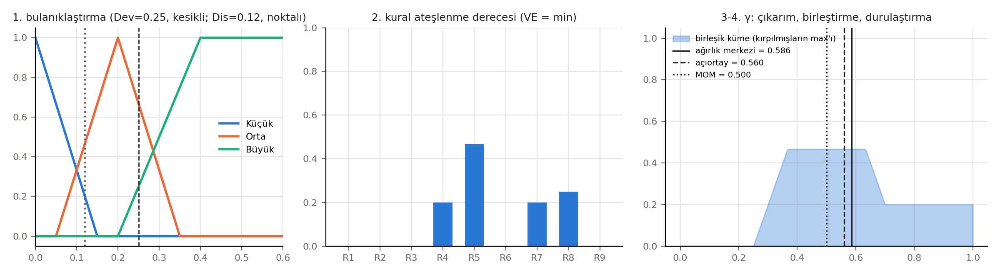

Özet—Wu vd. (Expert Systems with Applications, 2024) tarafından önerilen, tamamlayıcı uzamsal bilgiye dayalı uyarlamalı seyrek düzenlileştirilmiş bulanık C-ortalamalar yöntemini sıfırdan yeniden gerçekleştiriyor ve makalenin ana deneylerini üç sentetik görüntü ile sekiz BSDS500 görüntüsü üzerinde yeniden üretiyoruz. FCM temel yöntemimiz makalede raporlanan FCM sonuçlarını ortalama {{E1_acc_mad}} doğruluk puanı farkla yakalıyor; yeniden gerçekleştirilen yöntem %5 karışık gürültüye kadar makaleyle ortalama {{E2_acc_mad_low}} puan içinde kalıyor, %15 gürültüde ise {{E2_acc_maxgap}} puana kadar düşük kalıyor. Bu süreçte makalenin altı belirsizliğini ve tutarsızlığını belgeliyoruz; bunlar arasında Kappa değerlerinin doğruluğun sabit bir ölçeklemesi olması ve yayımlanan parametrelerle yerel-olmayan ortalama adımının bir ortalama filtresi gibi davranması var. Geliştirme olarak makalenin piksel başına kapalı formdaki güven katsayılarını dokuz EĞER–İSE kuralından oluşan açık bir Mamdani bulanık çıkarım sistemiyle değiştiriyor; üyelik fonksiyonu şekillerini, durulaştırma yöntemlerini ve bir Sugeno varyantını karşılaştırıyoruz. Önceden kayda geçirilen kural tabanı yöntemi iyileştirmedi: yüksek gürültüde anlamlı biçimde kötüydü (sy2/sy3'te %15 gürültüde {{E5_full_acc_drop15}} doğruluk puanı), keşifsel bir varyant ise düşük gürültüde yalnız küçük kazançlar sağladı. Bu başarısızlığın analizine dayanan, ayrı bir ayar kümesi kullanan ve önceden kayda geçirilen ikinci iterasyon, yerel terimin ödül katsayısı σ'yı görüntü düzeyindeki bir gürültü tahmininden belirleyen üç kurallı bir Mamdani sistemi ekliyor. Bu sistem doğruluğu %10 ve %15 gürültüde {{E8_fs_gain10}} ve {{E8_fs_gain15}} puan artırıyor (p < 0.001), düşük gürültüde kayba yol açmıyor ve %15 gürültüde makalede raporlanan değerlere olan farkı {{E8_gap15_before}} puandan {{E8_gap15_after}} puana indiriyor (sy2/sy3), ama kapatmıyor; sabit σ = 0.9 ile yapılan kontrol, kazancın kural tabanının kendisinden değil σ'nın uyarlanmasından geldiğini gösteriyor. Gürültülü piksele duyulan güven sınırlandığında ilk kural tabanı da artık hiçbir ayarda makalenin formülünden kötü değil.
Anahtar Kelimeler—bulanık C-ortalamalar, görüntü bölütleme, bulanık çıkarım sistemi, yeniden üretilebilirlik, çift ağaçlı karmaşık dalgacık dönüşümü, seyrek düzenlileştirme.
I. Giriş
Bölütleme bir görüntüyü homojen bölgelere ayırır ve pek çok görme sisteminin temel adımıdır. Bulanık C-ortalamalar (fuzzy C-means, FCM) [2] bu iş için yaygındır, çünkü her piksele kesin bir etiket yerine her kümeye bir üyelik derecesi atar; ancak pikselleri gri düzey uzayında bağımsız noktalar olarak ele aldığı için gürültüye çok duyarlıdır [1]. Uzun bir çalışma dizisi FCM'ye uzamsal bilgi ekler [8]–[23]. Bu projenin referans makalesi Wu vd. [1] dört fikri birleştirir: (i) komşuların gri düzey sırasına göre altın oranlı bir ödül kümesine ve bir ceza kümesine ayrıldığı yerel kestirim ξ, (ii) çift ağaçlı karmaşık dalgacık (DTCWT) alanında yerel-olmayan ortalama ile elde edilen yerel-olmayan kestirim ϑ, (iii) özgün değeri iki kestirime karşı tartan piksel başına α, β, γ katsayıları ve (iv) üyelik matrisinin sert eşikleme ile çözülen ℓ0 seyrek düzenlileştirmesi. Makale FCM'ye ve sekiz başka yönteme göre büyük kazançlar raporlar.
Bu proje ders yönergesini izler: makaleyi incelemek, yeniden gerçekleştirmek, deneylerinden en az birini yeniden üretmek, yöntemi geliştirmek ve geliştirmeyi kontrollü deneylerle temel yönteme karşı değerlendirmek. Katkılarımız şunlardır:
- FCM'nin ve yöntemin tamamının birim testli, bağımsız ve açık kaynak bir gerçekleştirimi; makalenin şekillerinden yeniden oluşturulan test verisi (sentetik görüntüler ve BSDS500 referans bölütlemeleri) ve yeterince tanımlanmamış karışık gürültü modelinin doğrulanmış bir yorumu;
- [1]'in Tablo 1–9'unun her ayarda 10 tohumla yeniden üretilmesi ve farkların analizi; buna makalenin belgelenmiş altı belirsizliği ya da tutarsızlığı da dahildir (Bölüm IX);
- kapalı formdaki güven katsayılarını açık bir Mamdani bulanık çıkarım sistemiyle [35] değiştiren bir geliştirme: deneylerden önce sabitlenen hipotezler, üyelik fonksiyonlarının, durulaştırma yöntemlerinin ve bir Sugeno varyantının [36] karşılaştırılması, dört gürültü türü için dayanıklılık deneyleri ve dürüstçe raporlanan olumsuz bir sonuç;
- bu sonucun teşhis edilen nedenlerini hedefleyen (ödül katsayısı σ için bir bulanık kural, gürültülü piksele sınırlı güven ve bir dürtü girdisi), ayrı gürültü örnekleri üzerinde ayarlanan ve tek sefer test edilen, önceden kayda geçirilmiş ikinci bir iterasyon.
II. İlgili Çalışmalar
Yerel uzamsal bilgi. BCFCM [8] FCM amaç fonksiyonuna ilk kez bir komşuluk terimi ekledi; FCM_S1/S2 [9] bunun yerine önceden filtrelenmiş görüntüler ve bir çekirdek uzaklığı kullandı; FGFCM [10] uzamsal ve gri düzey benzerliğini birleştirip gri düzey histogramını kümeledi. FLICM [11] parametresiz bir bulanık etken getirdi ve KWFLICM [13] ile ADFLICM'e [14] yol açtı. FRFCM [15] morfolojik yeniden yapılandırma [6] ve üyelik filtrelemesi kullanır, DSFCM_N [16] gürültüyü seyrek bir sapma olarak modeller, FCM_SICM [18] ise iki yönlü filtreleme ve üyelik bağlama kullanır. [1]'de belirtildiği gibi bu işlemler esasen komşuluğun ortalamasını alır; komşuların çoğu bozulmuşsa bu ortalama yanlıdır.
Yerel-olmayan ve bölge düzeyi bilgi. Yerel-olmayan ortalamayı [5] izleyerek FCM_SNLS [12] benzer yamalara sahip piksellerden bilgi toplar. FALRCM [20] medyan üyeliklerle bölge düzeyi bilgi ekler, FSC_LNML [22] ise bulanık alt uzay kümelemeyi uyarlamalı yerel varyans, yerel-olmayan bilgi ve üyelik bağlama ile birleştirir. Jiao vd. [24] bölgesel ve yerel filtrelemeden ağırlıklı bir görüntü oluşturur ve bunun özgün görüntüyle dengesini piksel başına uyarlar.
Dönüşüm alanı ve seyreklik. WFCM [17] bir dalgacık çerçevesi alanında kümeleme yapar; SRFCM [19] morfolojik yeniden yapılandırma ve üyeliklerin seyrek düzenlileştirmesini ekler ve bunu bir Lagrange adımı, eşikleme ve normalizasyonla çözer — [1]'in benimsediği şema budur. Chen vd. [25] bulanık kümeleme içinde seyrek öz-temsil kullanır.
Diğer yönler. Güncel çalışmalar bulanık bölmelemenin kendisini değiştirir [27], bulanık kümelemeyi derin ağlarla birleştirir [26] ya da K'yı otomatik kestirir [28]. Bu yöntemler arasında yerel, yerel-olmayan, dalgacık alanı, seyrek ve piksel başına uyarlamalı bileşenleri birleştiren tek çalışma [1]'dir; en yakın akrabaları SRFCM [19] ve FSC_LNML'dir [22]. Hiçbiri piksel başına ağırlıklandırmayı açık bir bulanık kural tabanı olarak ifade etmez; geliştirmemizin hedeflediği boşluk budur.
III. Kuramsal Altyapı
A. Bulanık kümeler ve bulanık çıkarım
X evreni üzerindeki bir bulanık küme A, μA: X → [0,1] üyelik fonksiyonu (membership function) ile tanımlanır [34]. Bir Mamdani sistemi [35] keskin girdileri dört adımda keskin çıktılara dönüştürür: bulanıklaştırma (her girdinin dilsel terimlerindeki üyelik dereceleri), kural değerlendirme (“EĞER x1 A VE x2 B İSE z C” kuralının ateşlenme derecesi min(μA(x1), μB(x2))), çıkarım ve birleştirme (her sonuç kümesi ateşlenme derecesinde kırpılır, kırpılmış kümeler max ile birleştirilir) ve birleşik μ(z) kümesinin durulaştırılması (defuzzification): ağırlık merkezi ∫zμ(z)dz/∫μ(z)dz, alanın açıortayı ya da maksimumların ortalaması. Sıfırıncı derece Takagi–Sugeno sisteminde [36] sonuçlar cr sabitleridir ve çıktı Σwrcr/Σwr olur.
B. Bulanık C-ortalamalar
FCM [2], N gri değeri yj'yi ci merkezli K bulanık kümeye şu ifadeyi en küçükleyerek ayırır:
Burada m > 1 bulanıklaştırıcıdır. Dönüşümlü eniyileme uij = 1/Σr(|yj−ci|/|yj−cr|)2/(m−1) ve ci = Σjuijmyj/Σjuijm güncellemelerini verir; her adım J'yi artıramaz. Her küme pikseller üzerinde bir bulanık kümedir; keskin bölütleme argmaxi uij ile durulaştırılarak elde edilir.
C. DTCWT ve yerel-olmayan ortalama
DTCWT [4], çıktıları karmaşık katsayıların gerçel ve sanal kısımlarını oluşturan iki gerçel dalgacık ağacı kullanır; kaymaya neredeyse duyarsızdır ve altı yönü (±15°, ±45°, ±75°) ayırır. Yerel-olmayan ortalama [5] her değeri bir arama penceresindeki değerlerin ağırlıklı ortalamasıyla değiştirir; ağırlıklar çevreleyen yamalar arasındaki Gauss ağırlıklı uzaklıkla azalır.
IV. Özgün Yöntem

Yerel bilgi ξ ([1], Alg. 2). w×w bir pencerede i pikselinin NR−1 komşusu sıralanır; ortadaki ⌈0.618(NR−1)⌉ komşu ödül kümesini, diğerleri ceza kümesini oluşturur. Sij = exp(−(xj−xi)²/τi²), τi² = Σp(xp−xi)²/NR olmak üzere ağırlıklar SSij = (1±σ)Sij·exp(−dij), kestirim ξi = ΣjSSijxj/ΣjSSij'dir; dij uzamsal uzaklıktır.
Yerel-olmayan bilgi ϑ. Görüntü tek düzeyli DTCWT ile ayrıştırılır; S×S arama penceresi, w×w yamalar, standart sapması υ olan Gauss yama ağırlıkları ve g·w² süzme parametresiyle yerel-olmayan ortalama yedi alt görüntünün hepsine uygulanır ([1], Denk. 10–11); ters dönüşüm ϑ'yı verir.
Uyarlamalı katsayılar. ΔG1 = k·exp(yj−ξj) ve ΔG2 = k·exp(yj−ϑj) ile αj = 1/(ΔG1+ΔG2), βj = ΔG1, γj = ΔG2. Kestirimlerinden farklı olan bir piksel kendi değerine daha az güven alır.
Seyrek düzenlileştirilmiş FCM ([1], Alg. 3). Amaç fonksiyonu şudur:
Her iterasyon ci = Σjuijm(αjyj+βjξj+γjϑj)/Σjuijm(αj+βj+γj) merkezlerini ve dij'den FCM türü ηij üyeliklerini hesaplar, ηij < √δ olanları sıfırlar ve sütunları yeniden normalize eder. Parametreler: w = 5, S = 15, υ = 4, g = 10, σ = 0.3, k = 15, δ = 0.4, m = 2, ε = 10−6, T = 100.
Bulanık sistem görünümü. Girdiler y, ξ ve ϑ'dır; her küme üyelik fonksiyonu uij olan bir bulanık kümedir; çıkarım mekanizmasının rolünü (2)'nin en küçüklenmesi üstlenir (“ağırlıklı uzaklıkta ci'ye yakın bir piksel i kümesine güçlü biçimde aittir”); durulaştırma argmax'tır. Yöntemde açık bir kural tabanı yoktur — geliştirmemizin çıkış noktası budur.
V. Yeniden Gerçekleştirme Yöntemi
Gerçekleştirim. Her şey yazarların kodu kullanılmadan Python 3.12 ile (NumPy, SciPy, OpenCV, dtcwt) yazıldı. Her modül birim testlerine sahip ({{n_tests}} test): örneğin vektörleştirilmiş yerel-olmayan ortalama Denk. 10–11'in doğrudan kodlanmış hâline eşittir, [1]'in Şekil 1'indeki çözümlü örneğin ödül/ceza kümeleri birebir yeniden üretilir ve ek terimler kapatıldığında seyrek yöntem tam olarak FCM'ye indirgenir. Belirli bir tohum için FCM ve önerilen yöntem aynı rastgele başlangıç üyeliklerini paylaşır.
Veri. Sentetik görüntüler yayımlanmamış olduğundan [1]'in Şekil 9'unun rasterini çıkardık, her paneli 256×256'ya yeniden boyutlandırdık ve her pikseli ölçülen gri düzeylerin en yakınına atadık (sy1: 0/255, K = 2; sy2: 0/107/255, K = 3; sy3: 0/107/222, K = 3). BSDS500 [7] için makale Şekil 22'de gösterilen sadeleştirilmiş 2–4 sınıflı referanslara göre değerlendirme yapar; bunları aynı yolla yeniden oluşturduk ve insan bölütlemeleriyle doğruladık (bölgeler birleştirildikten sonra %93.5–99.7 uyum). Renkli görüntüler BT.601 ağırlıklarıyla griye çevrilir.
Gürültü. [1] “eşit oranlarda Gauss, tuz-biber ve çarpımsal gürültü” tanımlar ama düzeyin tanımını vermez. %p karışık gürültüyü sırasıyla p varyanslı Gauss gürültüsü, ardından benek (p varyanslı çarpımsal düzgün) gürültü, ardından p yoğunluklu tuz-biber gürültüsü olarak okuyoruz. Bu okumayla FCM'miz makalede raporlanan FCM'yi ortalama {{E1_acc_mad}} ACC puanı farkla yeniden üretiyor (Bölüm VIII-A); bu da yorumu destekliyor.
Ölçütler. VPC, VPE (U'dan), ACC, F-skoru (makro ortalama), NMI ve Kappa (etiket haritasından). Kümeler sınıflarla Macar algoritmasıyla eşlenir. Cohen kappa değerini raporluyoruz; makaleyle karşılaştırma için onun Kappa değerlerinin karşılık geldiği ölçeklenmiş ACC'yi de hesaplıyoruz (Bölüm IX).
Yorum seçimleri. Tablo I sonuçları etkileyen kararları listeliyor; hepsi kanıtlarıyla birlikte report/decisions.md dosyasında kayıtlı.
VI. Önerilen Geliştirme: Yöntemin Ağırlıkları için Mamdani Kural Tabanları
A. Birinci iterasyon: güven katsayıları için bir kural tabanı
Motivasyon. k = 15 ve [0,1] aralığındaki gri değerlerle ΔG [5.5, 40.8] aralığındadır; bu yüzden neredeyse her pikselde α ≈ 0.01–0.1 ve β ≈ γ olur, iki kestirim her zaman aynı ağırlığı alır. Yeniden üretimimiz bunların farklı yerlerde başarısız olduğunu gösteriyor: yayımlanan parametrelerle yerel-olmayan adım her alt bantta neredeyse 15×15'lik bir ortalama filtresi gibi çalışıyor (düz bölgelerde güçlü, kenarlarda bulanıklaştırıcı); ξ ise kenarlara duyarlı ama yoğun gürültüde daha zayıf. Bir kural tabanı bu tür bilgiyi açıkça ifade edebilir, incelenebilir ve yöntemi bulanık çıkarıma bağlar.
Tasarım (deneylerden önce sabitlendi). Piksel başına iki girdi: Dev = |y − (ξ+ϑ)/2| (uzlaşıdan sapma; büyükse büyük olasılıkla gürültü) ve Dis = |ξ − ϑ| (kestirimlerin anlaşmazlığı; büyükse büyük olasılıkla kenar). [0,1] üzerinde Küçük/Orta/Büyük terimleri (üçgen/yamuk; aynı kesişim noktalarına sahip Gauss varyantı); Düşük/Orta/Yüksek terimli α, β, γ çıktıları (Şekil 2). Dokuz kural Tablo II'de veriliyor; çıkarım min/min/max ve ağırlık merkezi durulaştırması kullanıyor, çıktılar her pikselde α+β+γ = 1 olacak şekilde normalize ediliyor. Sıfırıncı derece Sugeno sürümü aynı kuralları, çıkış terimlerinin ağırlık merkezlerini sabit olarak kullanarak çalıştırıyor. FIS her görüntü için bir kez değerlendiriliyor.
{{TABLE_rules}}
Hipotezler (CP4, koşulardan önce kayda geçti). H1: FIS, sy2/sy3'te %10–15 gürültüde ACC'yi artırır ve %1–5'te en fazla 0.5 puan kaybettirir. H2: BSDS500 görüntülerinde de ortalama ACC'yi artırır. H3: üyelik şekli ve durulaştırma ACC'yi bir puandan az değiştirir. H4: Sugeno, Mamdani-ağırlık merkezinin bir puan yakınındadır. Keşifsel varyant. İlk koşular önceden kayıtlı FIS'in (“full”) gürültülü piksele toplam güvenin yaklaşık %30'unu verdiğini gösterince (makale: yaklaşık %0.1), sonradan tam olarak bir varyant ekledik: “split”, makalenin α'sını ve toplam β+γ güvenini koruyor, FIS'i yalnızca bu güveni ξ ile ϑ arasında paylaştırmak için kullanıyor. Sonuçlara bakarak başka hiçbir varyant ayarlanmadı.
B. İkinci iterasyon: bulanık ödül katsayısı (önceden kayıtlı)
Teşhis. Birinci iterasyon ölçülen iki nedenle başarısız oldu (Bölüm IX): kural tabanı gürültülü piksele güvenin yaklaşık %30'unu bırakıyor ve girdileri, ξ gürültülü olduğunda kenarı gürültüden ayıramıyor. Tek etkenli ablasyon (Bölüm VIII-E) ayrıca yerel terimin ödül katsayısı σ'nın yüksek gürültüdeki davranışı belirlediğini gösteriyor: düşük gürültüde σ = 0.3 yeterli, yüksek gürültüde daha büyük bir σ çok daha iyi. Sabit bir sayı her görüntüye uymaz; bu, bir kural tabanı için doğal bir görevdir: görüntü ne kadar gürültülüyse her penceredeki uç değerler o kadar güçlü cezalandırılmalı.
Adaylar. (A) α çıkış aralığı makalenin formülünün ürettiği aralığa daraltılmış ilk kural tabanı (çarpan 0.002, iki α payının medyan oranı); (B) “EĞER Imp Büyük VE Dis … İSE α Düşük” kurallarıyla üçüncü bir girdi Imp = |y − medyan3×3(y)|; (C) tek girdili bir Mamdani sistemi: girdi, en ince köşegen Haar katsayılarından elde edilen görüntü düzeyindeki gürültü tahmini median(|HH|)/0.6745 (gürültünün standart sapmasının dayanıklı bir tahmini: düz bölgeler HH = 0 verir, Gauss gürültüsünde median|n| = 0.6745σn), terimler Düşük/Orta/Yüksek; çıktı σ, terimler Küçük/Orta/Büyük; üç kural Düşük→Küçük, Orta→Orta, Yüksek→Büyük (Şekil 3), görüntü ya da piksel düzeyinde; ve bunların bileşimleri.
Protokol (CP6, her adımdan önce commit'lendi). Adaylar yalnızca 100–104 tohumlarında (başka hiçbir yerde kullanılmayan gürültü örnekleri) ve tümü kayda geçirilen 12 konfigürasyonluk bir bütçeyle ayarlandı; ayar ACC ortalaması en yüksek olan varyant önceden sabitlenen bir kuralla seçildi; seçilen varyant ve hipotezler, 0–9 test tohumlarındaki tek koşudan önce commit'lendi. B ve C fikirleri test tohumlarındaki gözlemlerden geldiği için test, bu fikirlerin parametrelerine kördür ama fikrin kendisine kör değildir. {{E8_n_configs}} konfigürasyon kullanıldı: A ve A+B yalnızca split varyantı düzeyine ulaştı (A: %{{E8_tune_A}}, makale katsayıları: %{{E8_tune_paper}}), B tek başına {{E8_tune_B}}, C varyantları {{E8_tune_C}}, en büyük çıkış terimi 0.95'e çekildiğinde ise %{{E8_tune_T7}} — seçilen varyant FIS-σ. Sabit σ = 0.9 %{{E8_tune_fixed}} verdi. C+A bileşimi (%{{E8_tune_T8}}) ayar kümesinde hiçbir seviyede makale katsayılarının altına düşmedi ve ikincil varyant FIS-σ+A olarak ilan edildi.

Hipotezler (D-045). H5: FIS-σ, %10 ve %15 gürültüde makale ayarlarından daha yüksek ortalama ACC verir (30 görüntü–tohum çifti üzerinde eşleştirilmiş Wilcoxon, p < 0.05) ve %1 ile %5'te hiçbir yerde 0.5 puandan fazla düşük değildir. H5-kontrol (beklenen sıfır sonucu): FIS-σ ile sabit σ = 0.9 her karışık gürültü ayarında 0.5 puandan az farklıdır; kuralın sabit değere üstünlüğü ancak başka gürültü türlerinde, düşük gürültüde ya da doğal görüntülerde ortaya çıkabilir. H6: FIS-σ+A hiçbir yerde makale ayarlarının altında değildir.
VII. Deney Düzeni
Sentetik görüntüler: %1, %5, %10 ve %15 karışık gürültü; BSDS500: %5; dayanıklılık: %0–20 Gauss, benek, tuz-biber ve karışık gürültü. Her ayar 10 tohumla koşuldu; bir tohum gürültü örneğini ve tüm yöntemlerin paylaştığı başlangıç üyeliklerini sabitler. Ortalama ± standart sapma ile tohumlar üzerinde eşleştirilmiş iki yönlü Wilcoxon işaretli sıra testlerini (α = 0.05) raporluyoruz. E1–E3 Tablo 2–8'i (FCM ve önerilen yöntem) ve Tablo 1'deki ablasyonu yeniden üretir; E4 Şekil 10–13'teki parametre çalışmasını tekrarlar; E5 geliştirmeyi değerlendirir (ana karşılaştırma, FIS varyantları, gürültü türüne göre dayanıklılık, makalenin keyfî seçimlerinin tek etkenli ablasyonu); E6 sekiz BSDS500 görüntüsünü kullanır; E7 çalışma süresini başka iş yapmayan bir dizüstü işlemcide ölçer ({{cpu_note}}); E8 ikinci iterasyondur (ayar tohumları 100–104; test tohumları 0–9 ile sentetik ızgara, %0–20'de dört gürültü türü ve gri ile renkli BSDS500; ek kontrol olarak sabit σ = 0.9). Tüm tablo ve şekiller koşu bazındaki CSV dosyalarından betiklerle üretilir.
{{RESULTS_AND_REST}}